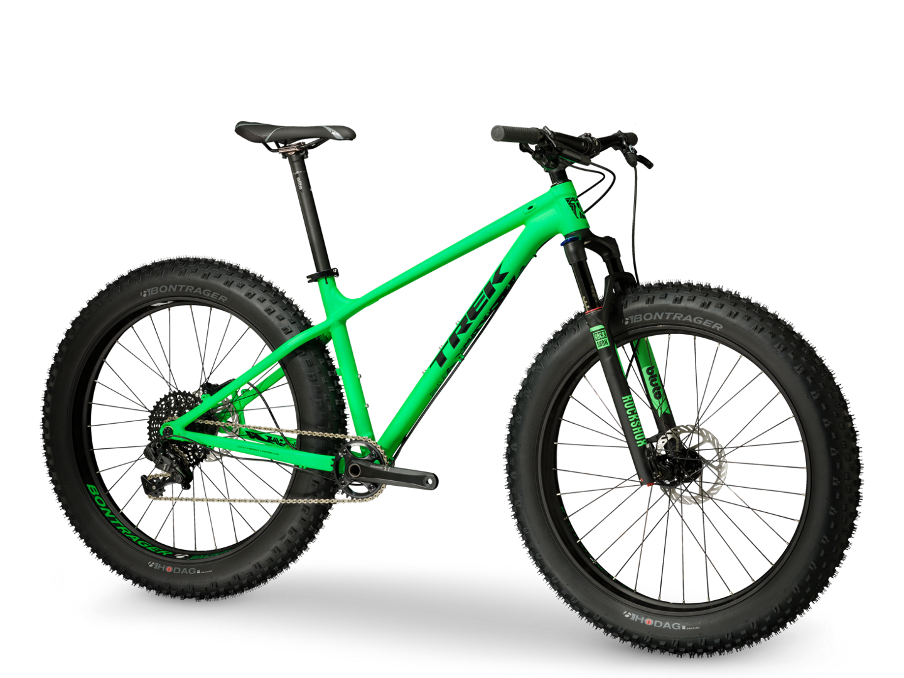

Что такое фэтбайк?

Это когда покрышки шириной 4.8 дюйма, когда можно кататься по мягким поверхностям и не проваливаться. 4.8 - это максимальный размер, есть и меньше. Для зимы это идеальный вариант. Родина этих созданий USA. Там популярность "луноходов" просто зашкаливает. В целом многие именитые бренды начали производство фэтбайков серийно, например TREK. Вот их "луноход" Farley.
Всего у TREK есть 2 модели. Причем цена ниже чем у вручную собранных фатов. Производителей много: SURLY, 9zero7, NORCO, Salsa... Пока лидером является SURLY, но все может поменятся. Судя по тенденциям, скоро многие велогиганты начнут производство фэтбайков. TREK делает всю экзотику сам, это хорошо сказывается на цене. Самый простой стоит 1800 USD.
Многие предпочитают собирать фэтбайки сами. Собственного опыта у меня нет, поэтому вот несколько мыслей из статьи с rideabike.ru. Что нужно знать при самостоятельной сборки фэтбайка?
Прежде всего, надо знать, что для сборки фэтбайка понадобится, как минимум, три нестандартные детали. Это рама и вилка (фреймсет), способные вместить такие широкие колеса, покрышки с камерами шириной 4 дюйма и широкие обода. Если поставить объемные покрышки с низким давлением на узкие обода, то возникнут серьезные проблемы с управлением. Для любого из выпускающихся фреймсетов обязательно надо будет приобрести каретку шириной 100 мм, но эта деталь является стандартной для ДХ велосипедов и ее можно купить даже в местных магазинах. Все остальные детали являются стандартными. Наиболее популярным решением в мире фэтбайка является модель рамы, выпускающаяся фирмой SURLY. Она называется SURLY PUGSLEY. В большинстве крупных американских веломагазинов можно свободно купить велосипед, собранный на этой раме. rideabike.ru
Собственного опыта по фэтбайкам у меня нет, хочеться попробовать это чудо в деле. Надеюсь скоро получиться сделать тест-драйв. Вот еще несколько мыслей из статьи.
Велосипед все же никак нельзя назвать зимним видом спорта. А как же иначе? Ведь уже пять сантиметров рыхлого переметенного снежка подписывают смертный приговор покатушке на велосипеде любого типа, и если со скользким льдом и снежным накатом еще можно бороться благодаря шипованной резине, то от снега спасения нет. Даже если вы находитесь в отличной физической форме и можете идеально держать равновесие, все равно, после каких-то нескольких километров, прошедший ночью небольшой снежок заставит вас слезть с седла и пойти пешком.
Что прежде всего велосипеду мешает ехать по снегу? Оказалось, что дело не в размере покрышки, а в ее форме. Поэтому, для того, чтобы форма покрышки в месте ее соприкосновения со снегом хоть отдаленно напоминала плоскую поверхность, надо было сделать так, чтобы внутри покрышки давление было минимальным. Законы физики таковы, что уменьшение давления в покрышке могло быть достигнуто только благодаря увеличению ее объема. Таким образом, родился новый тип велосипеда – велосипед с большими объемными колесами на низком давлении или так называемый фэтбайк.
rideabike.ru
А теперь несколько слов об универсальности.
Фэтбайк в этом отношении предоставляет уникальную возможность совместить в одном велосипеде самых широкий спектр велосипедных направлений и стилей катания. Все, что для этого надо сделать – это собрать две пары колес. Одна пара колес собирается на стандартных ободах шириной 2-2,5 см и диаметром 29”, а другая на широких ободах, рассчитанных для установки привычных для фэтбайка покрышек шириной 4”. В идеале стоит еще приобрести амортизационную вилку для горного велосипеда с колесами стандарта 29”, например – FOX F29er 100 мм. Дело в том, что внешний диаметр колес с покрышками шириной 4” в точности соответствует диаметру колес стандарта 29”, и все рамы и вилки фэтбайков выверены на использование колес этого стандарта. Таким образом, путем простой перестановки колес и покрышек можно легко получить сразу и собственно фэтбайк, и классический «найнер», и даже шоссейный велосипед, установив на 29-дюймовые обода шоссейный клинчер, шириной 25-27 мм. Можно даже заменять жесткую вилку фэтбайка на амортизационную вилку стандарта 29”, но для этого следует убедиться, что высота ног жесткой вилки вашего фэтбайка соответствует высоте ног амортизационной вилки, которую вы хотите использовать, иначе угол рулевой колонки окажется сильно завален. rideabike.ru
Фото

{kind=link}
{kind=link}
{kind=link}
{kind=link}
{kind=link}
{kind=link}
{kind=link}
{kind=link}
Видео
Фэтбайк NORCO езда по лесу …
Фэтбайк зимой. Видео с саммита 2013 года …